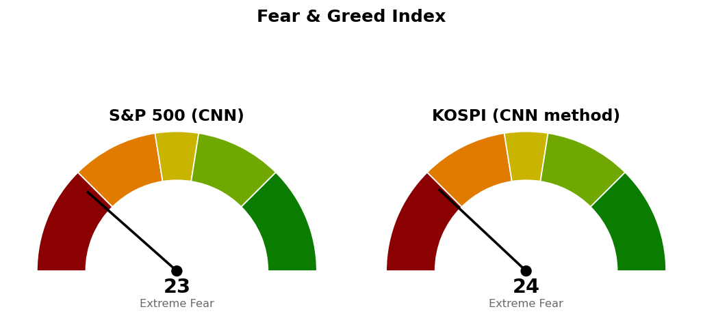

2026-10-19 장전 예측 4건: 4건 중 2건 적중(50.0%)
| 예측 | 근거 | 실제 | 판정 |
|---|---|---|---|
| S&P 500 종가 7,665 상회 | 다음 지지 7,665 재회복 — 10/16 종가 7,659, S&P 선물 +0.43%(7,738) | 종가 7,691 (+0.41%) | 적중 |
| 나스닥 종합 종가 26,432 상회 | 다음 지지 26,432 재회복 — 10/16 종가 26,140, 나스닥 선물 +1.23% | 종가 26,431 (+1.11%) | 빗나감 |
| 나스닥 종합, S&P 500 대비 강세 마감 | 선물 등락 나스닥 +1.23% 대 S&P +0.43%, 10/16 나스닥 -2.15% 대 S&P -1.09% | +1.11% 대 S&P 500 +0.41% | 적중 |
| 에너지 (XLE), S&P 500 대비 강세 마감 | 20일 초과수익 1위 +5.99%, 5일 +6.80% | -0.64% 대 S&P 500 +0.41% | 빗나감 |
US 최근 90일 누적 4건 중 2건 적중(50.0%) · 최근 20건 4건 중 2건 적중(50.0%)
나스닥은 장중 26,613까지 올랐다가 26,431에 마쳐 26,432에 1포인트 못 미쳤습니다. XLE는 67.80달러(-0.64%)로 마쳐 지수보다 1.05%포인트 약했고, 같은 날 원유 선물은 -3.13%였습니다. 누적 표본이 1세션 4건이라 적중률을 성과로 읽을 수 없습니다.
직전 시황은 오늘 미국 장전 회차이며, 가격은 10/17 미국 회차가 등록한 값입니다.
| 직전 가격 | 판정 방식 | 결과 (10/16 · 10/19) | 판정 |
|---|---|---|---|
| 나스닥 기준선 26,992 | 일봉 종가 상회 | 고가 26,613 | 미충족 |
| 나스닥 다음 지지 26,432 | 일봉 종가 하회 | 10/16 종가 26,140 이탈 · 10/19 종가 26,431 | 이탈 후 회복 실패 |
| 나스닥 사다리 1차 26,680 · 2차 26,261 | 장중 저가 도달 | 10/16 시가 26,653 · 저가 26,023 | 두 회차 집행 |
| 나스닥 취소선 25,967 | 일봉 종가 하회 | 최저 종가 26,140 | 지킴 |
| S&P 500 기준선 7,794 | 일봉 종가 상회 | 고가 7,731 | 미충족 |
| S&P 500 다음 지지 7,665 | 일봉 종가 하회 | 10/16 종가 7,659 이탈 · 10/19 종가 7,691 회복 | 이탈 후 회복 |
| S&P 500 사다리 1차 7,653 · 2차 7,578 | 장중 저가 도달 | 저가 7,632 | 1차만 집행 |
| S&P 500 취소선 7,517 | 일봉 종가 하회 | 최저 종가 7,659 | 지킴 |
하방 갈래가 열린 뒤 나스닥은 10/16 저가 26,023까지 내려가 사다리 2차를 채우고 취소선 25,967에서 56포인트 위에서 멈췄습니다. S&P 500은 7,632까지 내려가 1차만 채웠습니다. 두 지수 모두 직전 계획이 살아 있으므로 기준선·도착지·취소선을 옮기지 않습니다. 옮긴 것은 나스닥의 다음 지지 하나입니다 — 26,432를 종가로 잃고 되찾지 못해 그 아래 다음 받침인 26,261(9번 반응한 가격대 하단, 직전의 사다리 2차)로 내립니다. 직전 판단에서 정정할 것은 없습니다.
20일선·50일선은 지수이동평균(최근 가격에 더 무게를 둔 평균)입니다.
기준선까지 561포인트(하루 평균 변동폭의 1.55배)라 한 세션 평균 움직임으로는 닿지 않습니다. 사다리 두 회차가 모두 집행돼 남은 매수 회차는 없습니다. 90일 박스(24,897~27,296) 안쪽 판정은 중립(지지 테스트 매도 거래량 감소, 저점 절하, 상승봉 대 하락봉 거래량비 1.07)입니다.
기준선까지 103포인트(하루 평균 변동폭의 1.47배)입니다. 90일 박스(7,328~7,828) 안쪽 판정은 분산 우위(지지 테스트마다 매도 거래량 증가, 저점 절하, 거래량비 1.02)입니다. 두 지수 모두 기준선 아래이고 경로를 말할 근거가 없어 방향을 말하지 않고 기준선과 두 갈래만 냅니다.
S&P 500이 200일 이동평균 7,276 위(+5.70%, 4/8부터)라 새 계획을 냅니다. 등록된 미국 ETF 스윙 계획은 없었습니다.
엣지는 모멘텀(저항을 넘으면 그 방향이 이어진다는 전제)이고, 집행은 목표 74.54달러에서 전량 매도이며 트레일링은 걸지 않습니다. 손절이 이미 ATR 1.5배 자리라 구조적 손절 기준 손익비도 1:1.95입니다. 1% 리스크 기준 비중은 계좌의 36.8%로 나와 13%로 제한하며, 이때 손절 시 손실은 계좌의 0.35%입니다. 하루 변동폭이 가격의 1.9%라 손절 폭(2.72%)과 맞습니다. 진입은 돌파 확인형(주봉 1.272 확장선 + 70달러 라운드)이며, 조건 점검 9개 중 7개 통과, 미달은 상대강도선 신고가와 거래량 강도(최근 5일 최대 거래량이 20일 평균의 1.16배로 1.3배 미만)입니다. 순위 2위는 SPY 눌림 매수(1:2.80 (손절 1.01 ATR))였으나, 진입가 760달러가 현재가 766.48달러 아래라 진입을 종가 상회로 채점하는 지금 등록 방식에서는 다음 종가에 진입한 것으로 잡혀 이번에는 계획으로 내지 않습니다. XLP는 박스 안쪽이 분산 우위, QQQ는 현재가가 저항에 가까워 추격 비권장입니다.
상위 2개는 에너지·필수소비재이며 둘 다 10/19에는 지수보다 약했습니다. 기술은 1일 초과수익 +0.95%로 반등했지만 20일로는 최하위입니다. 한국은 2차전지(+22.49%)·헬스케어(+16.23%)가 20일 상위입니다.
종목 발굴: 200개를 훑어 3개가 남았습니다. 1순위 Imperial Oil (IMO)은 이 브리핑 뒤에 배치가 정식 리포트를 씁니다. Plains All American (PAA)·Occidental Petroleum (OXY)은 리포트가 아닌 후보이며, 텔레그램으로 종목명을 보내면 리포트가 나갑니다. 셋 다 에너지입니다.
| 항목 | 값 | 직전 대비 |
|---|---|---|
| 미국 경기선행지수 (2026년 9월) | 101.00 | 8월 대비 +0.05 · 직전과 같음 |
| 한국 경기선행지수 (2026년 9월) | 102.53 | 8월 대비 -0.13 · 직전과 같음 |
| 미 10년 명목금리 | 5.09% (10/16 확정) · 10/19 지수 시세 5.136% | 확정치 -0.01%포인트 · 시세 +0.038%포인트 |
| 미 10년 기대물가 | 2.35% (10/19) | 10/16과 같음 |
| 미 10년 실질금리 | 2.74% (10/16) | -0.04%포인트 (10/14 2.84%에서 -0.10%포인트) |
| 유가 (WTI) | 확정치 101.91달러 (10/14) · 선물 98.24달러 (10/19) | 확정치 직전과 같음 · 선물 -3.13% |
| 달러지수 (광의) | 121.40 (10/16) | -0.16 |
| 변동성지수 (VIX) | 18.44 (10/19) | -7.75% |
경기선행지수(OECD가 장기 평균을 100으로 놓고 경기 방향을 몇 달 앞서 보여주는 지표)는 새 발표가 없어 해석을 바꾸지 않습니다. 10/19 원유 선물이 -3.13% 내리는 동안 기대물가는 2.35%로 움직이지 않았습니다. 실질금리는 10/14~16 사이 0.10%포인트 내렸고 달러지수도 같은 기간 122.00에서 121.40으로 내려 방향이 일치합니다.

S&P 500은 CNN 공식값이며 1주 전 46.3, 1개월 전 30.4였습니다. 점수를 끌어내린 항목은 52주 신고가 대비 신저가 종목 수 12.4, 상승·하락 종목 거래량 13.4, 풋/콜 비율 15.4이고, 가장 높은 항목은 정크본드 수요 52.4입니다. 코스피는 CNN 방식을 한국 데이터로 재구성한 값이며 공식 지수가 아닙니다. 일곱 항목 중 세 개(모멘텀 4.2 · 변동성 53.6 · 안전자산 선호 14.2)만 썼고, 풋/콜 비율은 받을 경로가 확정되지 않아, 회사채 신용 스프레드는 한국은행 통계 API 키가 없어, 신고가·신저가와 거래량 폭 항목은 이 날짜 값이 없어 빠졌습니다.
| 날짜 (미국) | 이벤트 | 확인할 것 |
|---|---|---|
| 10/20 마감 | 뉴욕 마감 | 나스닥 26,992 · 26,261, S&P 500 7,794 · 7,665 대비 종가 · XLE 70.80달러 종가 |
| 10/22 | 신규 실업수당 청구 | 고용 |
| 10/28 | FOMC | 금리 결정 |
| 10/29 | PCE 물가 · GDP · 실업수당 청구 | 물가와 성장 |
| 11/6 | 고용보고서 · 실업률 | 고용 |
| 11/10 | CPI | 물가 |
1. 매수 쪽 — 나스닥은 사다리 두 회차가 모두 집행돼 더 살 회차가 없습니다. S&P 500은 2차 7,578에 장중 저가로 닿으면 계좌의 3%를 삽니다. 2. XLE 진입 대기 — 일봉 종가 70.80달러 상회 시 다음 세션 계좌의 13% 이내로 진입, 진입 후 68.87달러 장중 도달 시 전량 매도 (손절), 74.54달러에서 전량 매도 (목표 도달). 3. 일봉 종가로 나스닥 25,967 · S&P 500 7,517 아래면 매수 계획 종료이며, 산 회차는 다음 세션에 전량 매도 (사다리 취소)입니다. 4. 일봉 종가로 나스닥 26,992 · S&P 500 7,794 위면 상방 전환이며 도착지는 27,244 · 7,950입니다.
다음 세션에 볼 것 — 나스닥 종가가 26,261 위에 남는지입니다.
상대강도지수(RSI): 최근 14일 상승폭과 하락폭의 비율로 과열·침체를 보는 0~100 지표.
ATR: 하루 평균 변동폭(14일).
VIX: S&P 500 옵션 가격에서 뽑은 향후 30일 예상 변동성.
지수이동평균: 최근 가격에 더 무게를 둔 평균.